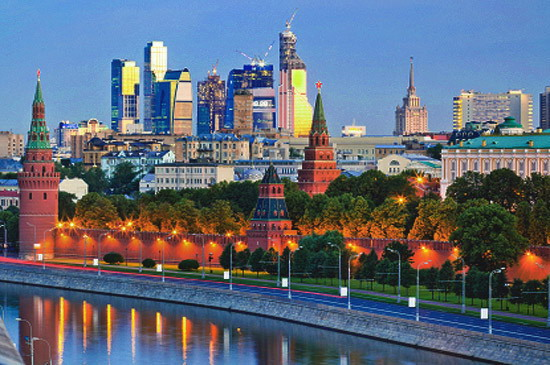
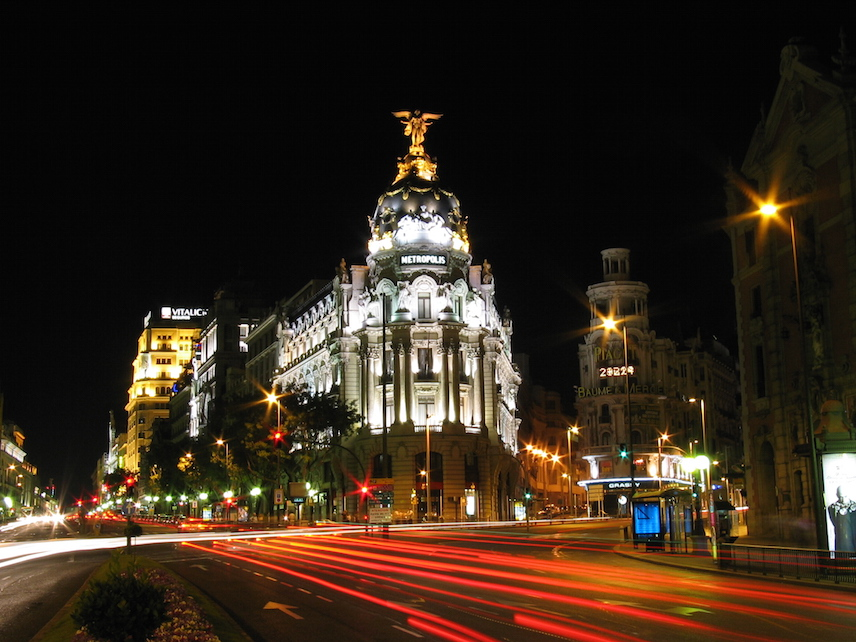
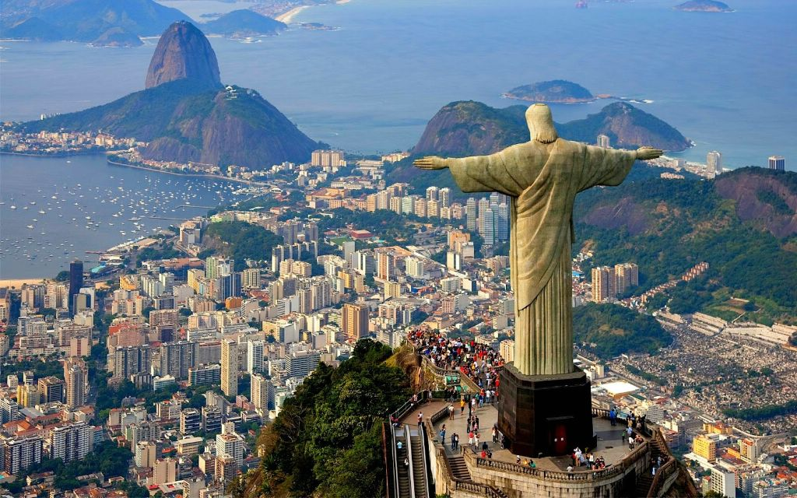

| Name | Country | Image | Description | Link |
| Moscov | Russia |  | Москва́ (произношение (инф.)) — столица Российской Федерации, город федерального значения, административный центр Центрального федерального округа и центр Московской области, в состав которой не входит. Крупнейший по численности населения город России и её субъект — 12 506 468[2] чел. (2018), самый населённый из городов, полностью расположенных в Европе, входит в первую десятку городов мира по численности населения[5], крупнейший русскоязычный город в мире. Центр Московской городской агломерации. | |
| Madrid | Spain |  | Мадри́д (исп. Madrid [maˈðɾið]) — столица и крупнейший город Испании, а также административный центр одноимённых провинции и автономного сообщества. Муниципалитет находится в составе района (комарки) Ареа-Метрополитана. Крупнейший экономический, политический и культурный центр страны. Население города — 3,165 млн жителей (2016) | |
| Rio-de-Janeiro | Brazil |  | Ри́о-де-Жане́йро, или, сокращённо, Рио (порт. Rio de Janeiro, буквально — январская река) — город в Бразилии, административный центр одноимённого штата. Население — 6,4 млн человек (2014), это второй по величине город страны и четвёртый Южной Америки. Образует агломерацию с населением 12 млн человек (2011 год)[6]. Крупный финансовый центр и морской порт на континенте, научный центр. |
То́кио (яп. 東京 То:кё: (инф.), «Восточная столица»[2][3]) — столица Японии, её административный, финансовый, промышленный и политический центр. Крупнейшая городская экономика мира. Расположен в юго-восточной части острова Хонсю, на равнине Канто в бухте Токийского залива Тихого океана. Помимо столицы, Токио также является одной из сорока семи префектур страны. Площадь префектуры составляет 2188,67 км²[5], население — 13 742 906 человек (1 октября 2017)[6], плотность населения — 6279,11 чел./км².